tibble(x = seq(0, 1, 0.001),
prior = dbeta(x = x, shape1 = 120*0.9, shape2 = 120*0.1)) |>
ggplot(aes(x, prior))+
geom_line(color = "red")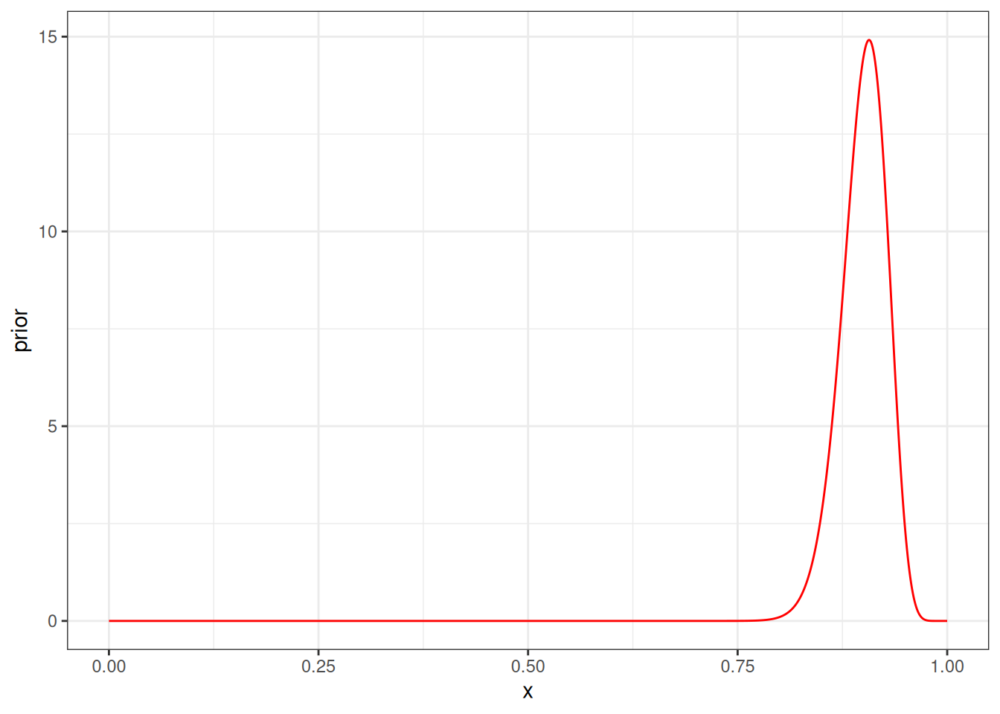
\[P(\theta|Data) = \frac{P(Data|\theta) \times P(\theta) }{P(Data)}\]
Рассмотрим какой-то простой случай, который мы уже видели много раз.
Если мы не будем следовать простой дорожкой, которую мы обсуждали несколько разделов назад, а будем все делать согласно формуле Байеса, то получатся следующие компоненты:
tibble(x = seq(0, 1, 0.001),
prior = dbeta(x = x, shape1 = 120*0.9, shape2 = 120*0.1)) |>
ggplot(aes(x, prior))+
geom_line(color = "red")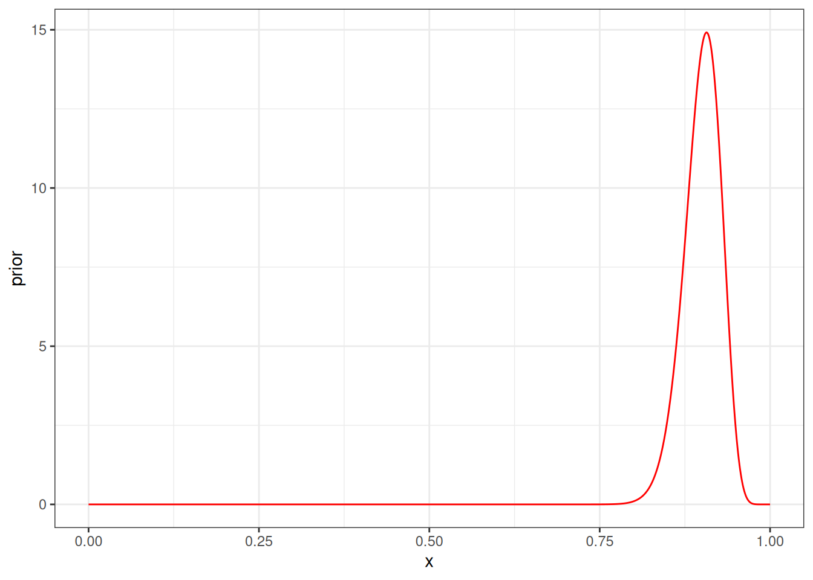
tibble(x = seq(0, 1, 0.001),
likelihood = dbinom(x = 92, size = 120, prob = x)) |>
ggplot(aes(x, likelihood))+
geom_line()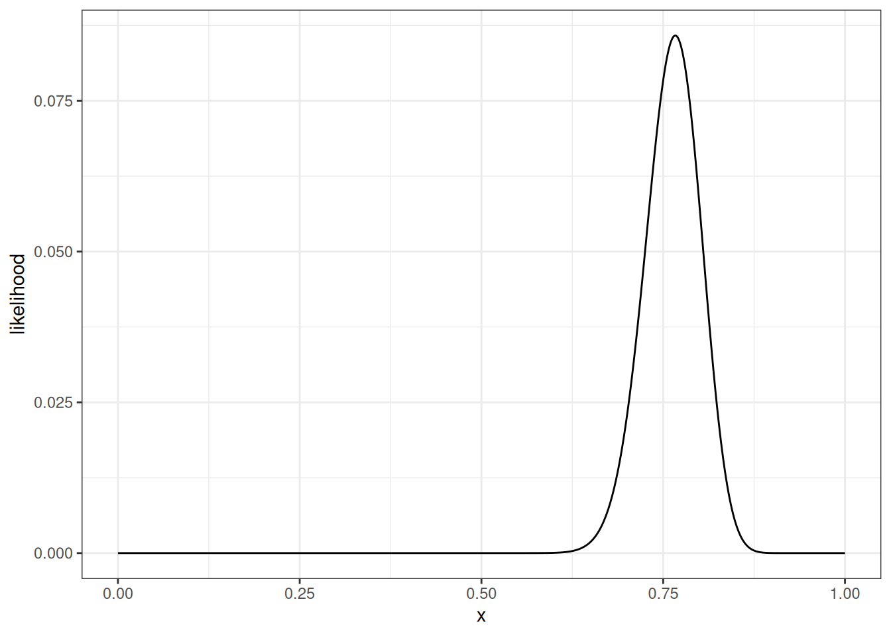
tibble(x = seq(0, 1, 0.001),
prior = dbeta(x = x, shape1 = 120*0.9, shape2 = 120*0.1),
likelihood = dbinom(x = 92, size = 120, prob = x),
product = prior*likelihood) |>
ggplot(aes(x, product))+
geom_line()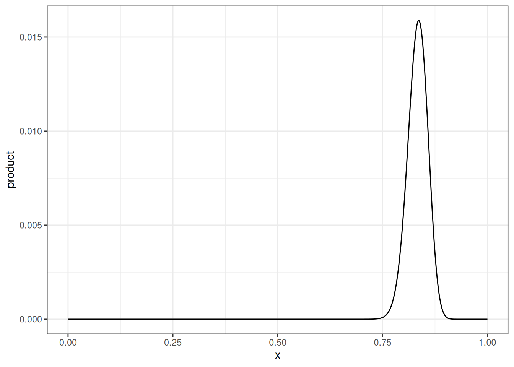
marginal_likelihood <- integrate(function(p){
dbinom(92, 120, p) * dbeta(p, 120*0.9, 120*0.1)},
lower = 0,
upper = 1)
marginal_likelihood0.0009531395 with absolute error < 0.000044tibble(x = seq(0, 1, 0.001),
prior = dbeta(x = x, shape1 = 120*0.9, shape2 = 120*0.1),
likelihood = dbinom(x = 92, size = 120, prob = x),
product = prior*likelihood,
posterior = product/marginal_likelihood[[1]]) |>
ggplot(aes(x, posterior))+
geom_line(color = "darkgreen")+
geom_line(aes(y = prior), color = "red")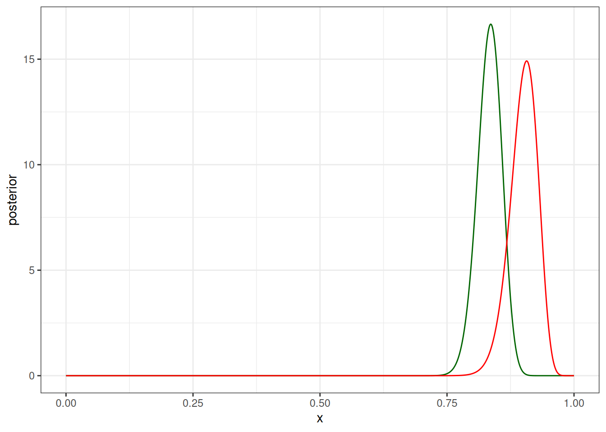
… которое мы умеем доставать и быстрее:
tibble(x = seq(0, 1, 0.001),
prior = dbeta(x = x, shape1 = 120*0.9, shape2 = 120*0.1),
likelihood = dbinom(x = 92, size = 120, prob = x),
product = prior*likelihood,
posterior = product/marginal_likelihood[[1]],
posterior_2 = dbeta(x = x, shape1 = 120*0.9+92, shape2 = 120*0.1+120-92)) |>
ggplot(aes(x, posterior))+
geom_line(color = "darkgreen", size = 2)+
geom_line(aes(y = prior), color = "red")+
geom_line(aes(y = posterior_2), linetype = 2, color = "yellow")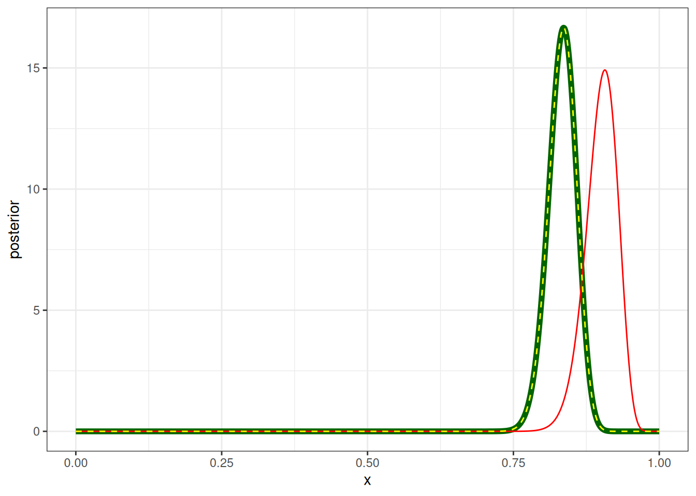
Представим себе, что у нас есть \(k\) гипотез \(M\). Тогда формула Байеса может выглядеть вот так:
\[P(M_k|Data) = \frac{P(Data|M_k) \times P(M_k) }{P(Data)}\] В данном занятии мы рассмотрим только случай двух модели, но можно рассматривать и случаи, когда моделей много. Посмотрим на соотношение апостериорных распределений двух моделей:
\[\underbrace{\frac{P(M_1 \mid Data)}{P(M_2 \mid Data)}}_{\text{posterior odds}} = \frac{\frac{P(Data|M_1) \times P(M_1) }{P(Data)}}{\frac{P(Data|M_2) \times P(M_2) }{P(Data)}}=\underbrace{\frac{P(Data \mid M_1)}{P(Data \mid M_2)}}_{\text{Bayes factor}}\times\underbrace{\frac{P(M_1)}{P(M_2)}}_{\text{prior odds}}\]
Таким образом байесовский коэффициент это соотношение апосториорных распределений деленное на соотношение априорных распределений.
\[BF_{12}= \frac{P(M_1 \mid Data)/P(M_2 \mid Data)}{P(M_1)/P(M_2)}=\frac{P(M_1 \mid Data)\times P(M_2)}{P(M_2 \mid Data)\times P(M_1)}\]
В результате получается, что коэффициент Байеса — это соотношение предельных правдоподобий (знаменатель теоремы Байеса):
\[BF_{12}= \frac{P(Data|\theta, M_1))}{P(Data|\theta, M_2))}=\frac{\int P(Data|\theta, M_1)\times P(\theta|M_1)}{\int P(Data|\theta, M_2)\times P(\theta|M_2)}\]
Важно заметить, что если вероятности априорных моделей равны, то байесовский коэффициент равен просто соотношению функций правдоподобия.
Надо отметить, что не все тепло относятся к сравнению моделей байесовским коэффициентом (см. (Gelman and Rubin 1995)).
Для примера обратимся снова к датасету, который содержит спамерские и обычные смс-сообщения, выложенному UCI Machine Learning на kaggle, и при помощи пакета udpipe токенизируем и определим часть речи:
sms_pos <- read_csv("https://raw.githubusercontent.com/agricolamz/2024_HSE_b_da4l/master/data/spam_sms_pos.csv")
glimpse(sms_pos)Rows: 34
Columns: 3
$ type <chr> "ham", "ham", "ham", "ham", "ham", "ham", "ham", "ham", "ham", "h…
$ upos <chr> "ADJ", "ADP", "ADV", "AUX", "CCONJ", "DET", "INTJ", "NOUN", "NUM"…
$ n <dbl> 4329, 5004, 5832, 5707, 1607, 3493, 1676, 12842, 1293, 2424, 1144…sms_pos |>
group_by(type) |>
mutate(ratio = n/sum(n),
upos = fct_reorder(upos, n, mean, .desc = TRUE)) |>
ggplot(aes(type, ratio))+
geom_col()+
geom_label(aes(label = round(ratio, 3)), position = position_stack(vjust = 0.5))+
facet_wrap(~upos, scales = "free_y")
Давайте полученные доли считать нашей моделью: сумма всех чисел внутри каждого типа (ham/spam) дает в сумме 1. Мы получили новое сообщение:
Call FREEPHONE 0800 542 0825 now!
Модель udpipe разобрала его следующим образом:
VERB NUM NUM NUM NUM ADV PUNCT
Если мы считаем наши модели равновероятными:
first_update <- tibble(model = c("ham", "spam"),
prior = 0.5,
likelihood = c(0.135, 0.096),
product = prior*likelihood,
marginal_likelihood = sum(product),
posterior = product/marginal_likelihood)
first_updateЕсли же мы примем во внимание, что наши классы не равноправны, то сможем посчитать это нашим априорным распределением для моделей.
sms_pos |>
uncount(n) |>
count(type) |>
mutate(ratio = n/sum(n)) ->
class_ratio
class_ratiosecond_update <- tibble(model = c("ham", "spam"),
prior = class_ratio$ratio,
likelihood = c(0.135, 0.096),
product = prior*likelihood,
marginal_likelihood = sum(product),
posterior = product/marginal_likelihood)
second_update# Bayes factor
second_update$marginal_likelihood[1]/first_update$marginal_likelihood[1][1] 1.098469Рассмотрим простенькую задачу, которую мы видели раньше:
tibble(x = seq(0, 1, by = 0.001),
y = dbeta(x, 120*0.9, 120*0.1),
z = dbeta(x, 120*0.85, 120*0.15)) |>
ggplot(aes(x, y))+
geom_line(color = "red")+
geom_line(aes(y = z), color = "lightblue")+
geom_vline(xintercept = 92/120, linetype = 2)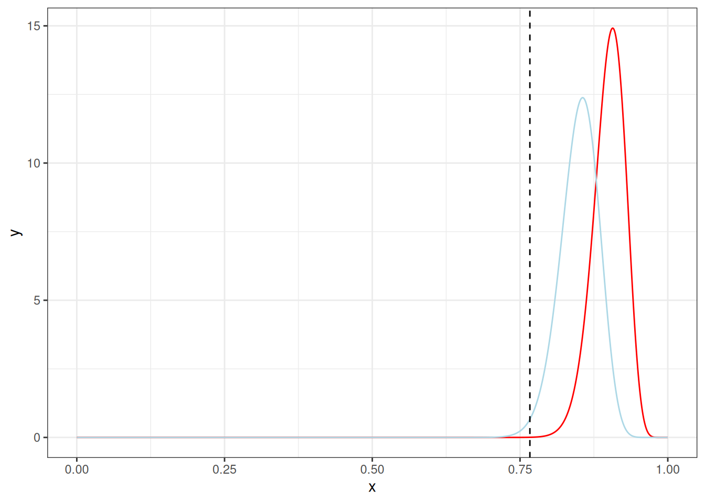
m1 <- function(p) dbinom(92, 120, p) * dbeta(p, 120*0.9, 120*0.1)
m2 <- function(p) dbinom(92, 120, p) * dbeta(p, 120*0.85, 120*0.15)
integrate(m1, 0, 1)[[1]]/integrate(m2, 0, 1)[[1]][1] 0.0672068До этого момента, когда мы говорили о сравнении биномиальных данных, мы обычно говорили о поиске и описании параметра p бета и биномиального распределений — которая в свою очередь представляет отражает нашу точечную оценку моделируемого процесса. Например, если мы пытаемся моделировать род слова (например, кофе), мы можем представить это в виде трех гипотез: слово относится к одному роду, к другому роду или существует вариативность:
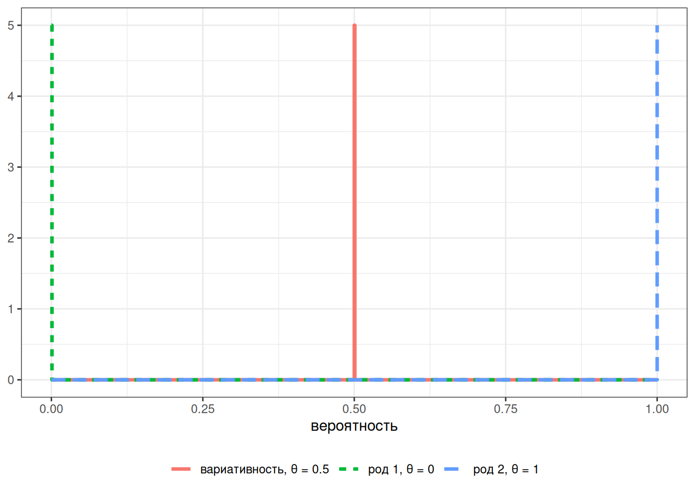
В большинстве случаев нас интересует не все три варианта, а лишь два: слово четко характеризуется некоторым родом или же мы наблюдаем вариативность. Если же вдруг в реальности вы видите третий вариант — значит вы недостаточно подготовились к моделированию и строить гипотезы было рано.
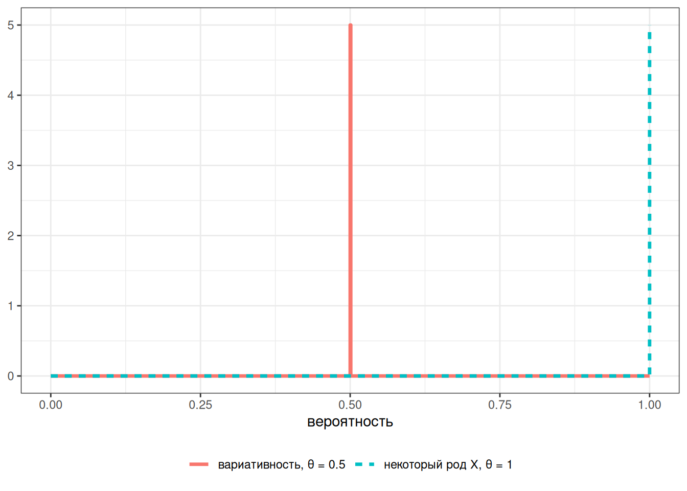
Представим в ходе эксперимента мы опросили 16 носителей. В таком случае мы можем описать предсказания модели при помощи двух биномиальных распределений:
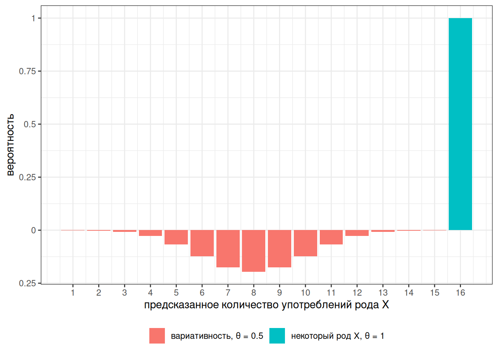
Наш классификатор получился слишком строгий: либо все говорят слово в роде X, либо вариативность. Для того, чтобы допустить хоть какие-то поблажки, давайте ослабим параметр с 1 до 0.96:
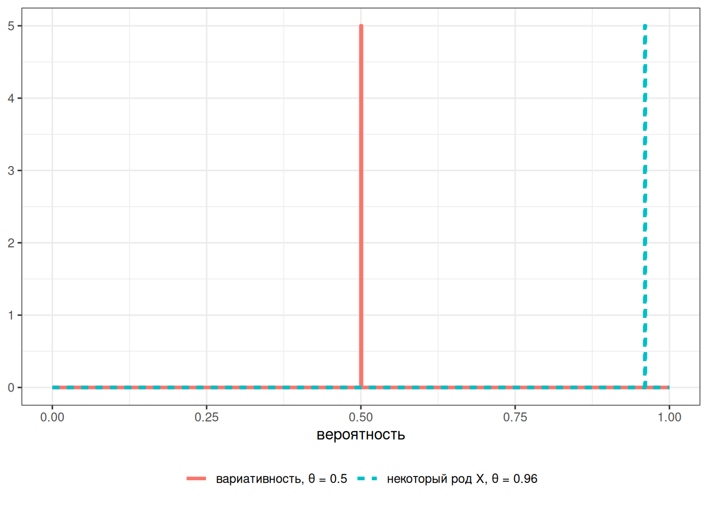
Тогда предсказания модели будет выглядит вот так:
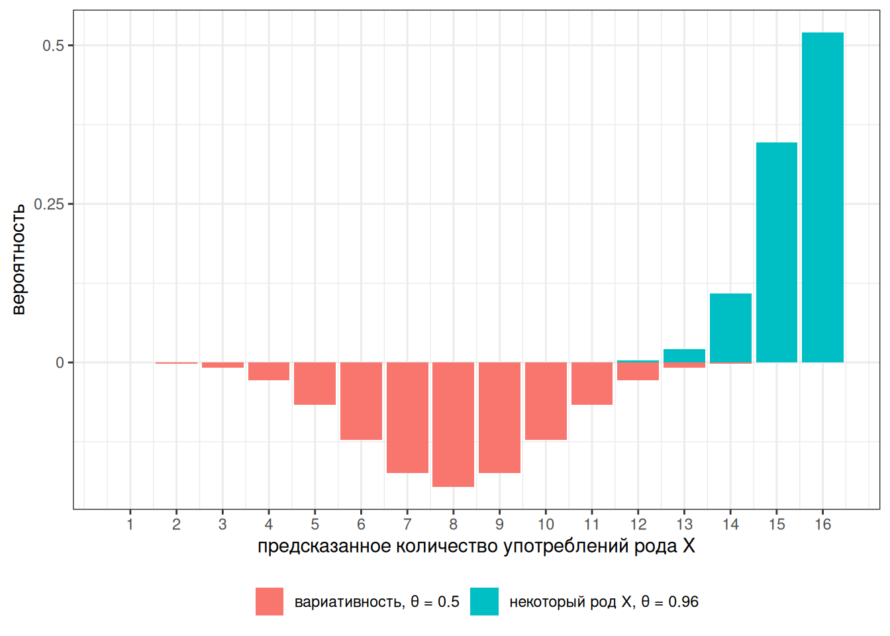
На всякий случай, соотношение высот столбиков — это фриквентистский вариант байесовского коэффициента, который называется тест отношения правдоподобия (likelihood ratio).
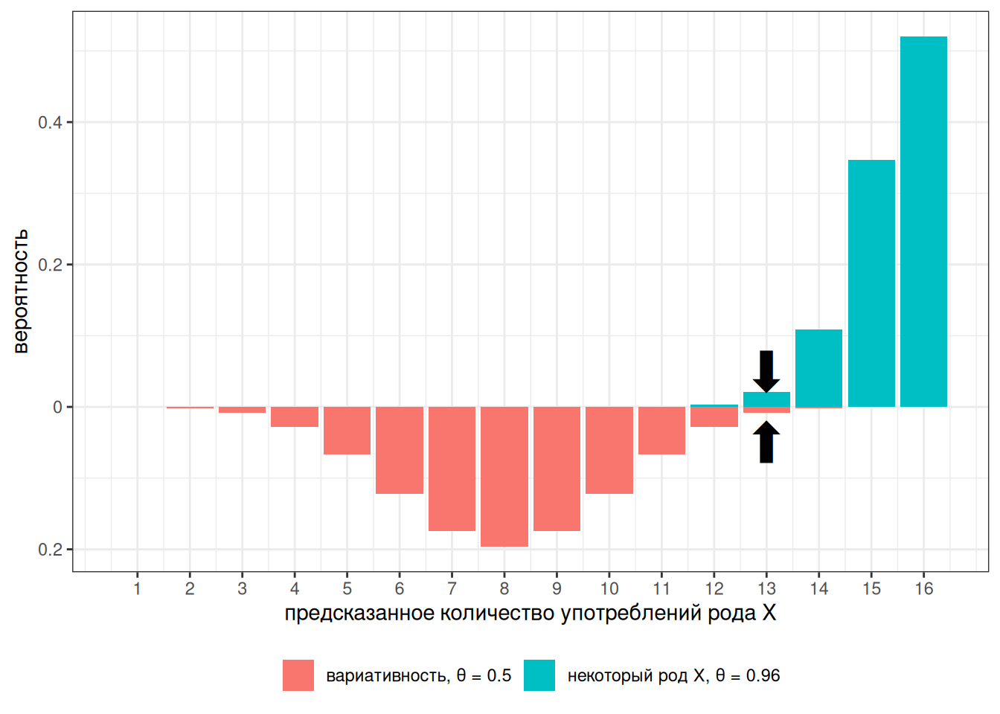
Основная проблема точечных оценок заключается в том, что они оставляют достаточно много неуверенности в промежуточных значениях. Представим, что у нас не 16 наблюдений, а 90:
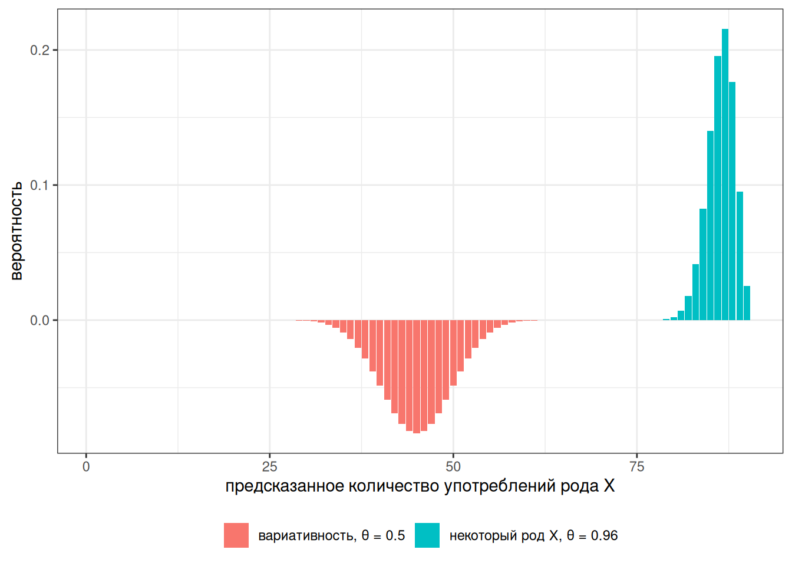
В таком случае наш классификатор достаточно сильно не уверен в значениях между 65 и 75. Альтернативой являются интервальные модели:
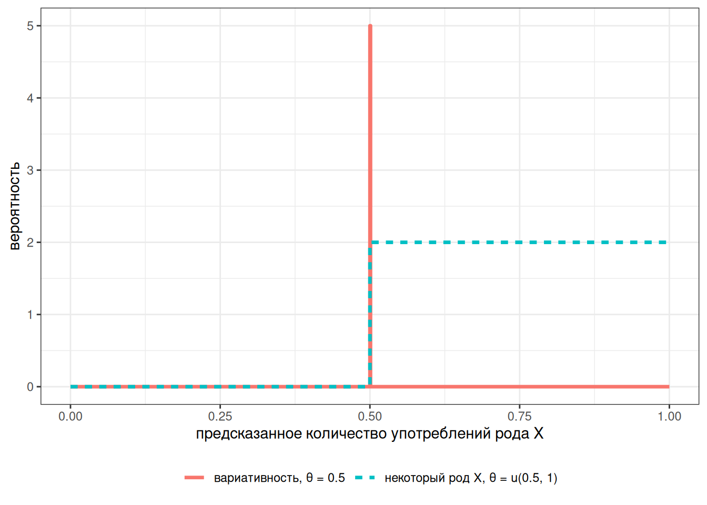
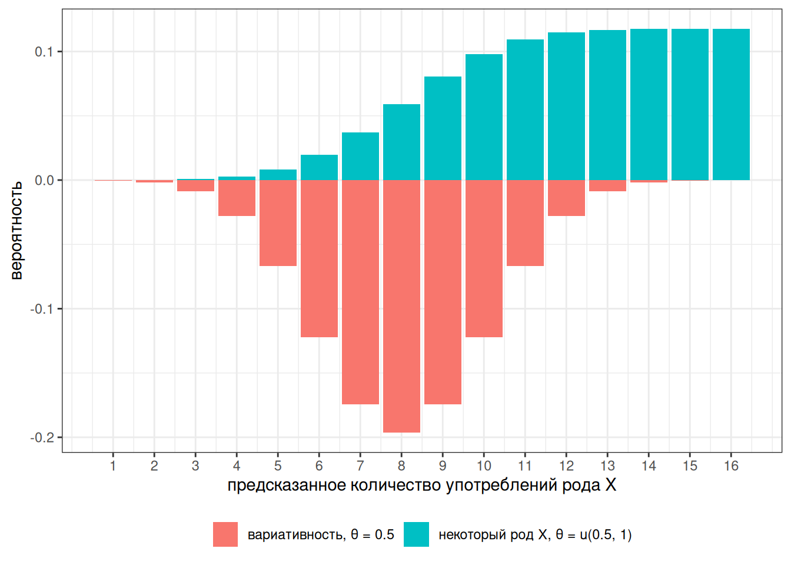
Или вот еще возможные комбинации:
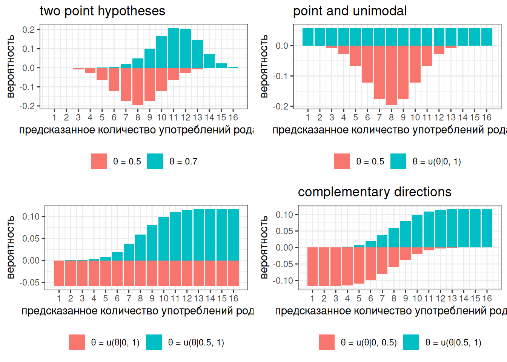